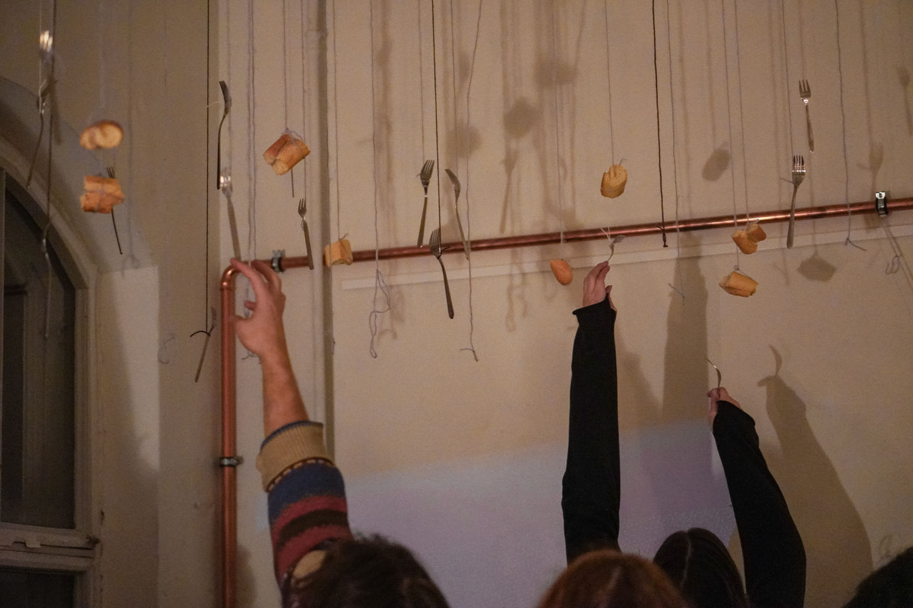

We adapt easily.
We can get used to just about anything, Even the most ugly and absurd.
How far can we go to justify our automatic response to this reality?
Just like we participate in the construction of these complex belief-systems, we can participate in their deconstruction.
Used To is a project by @makan_al_hummus
Image By Shuaijun Zhang